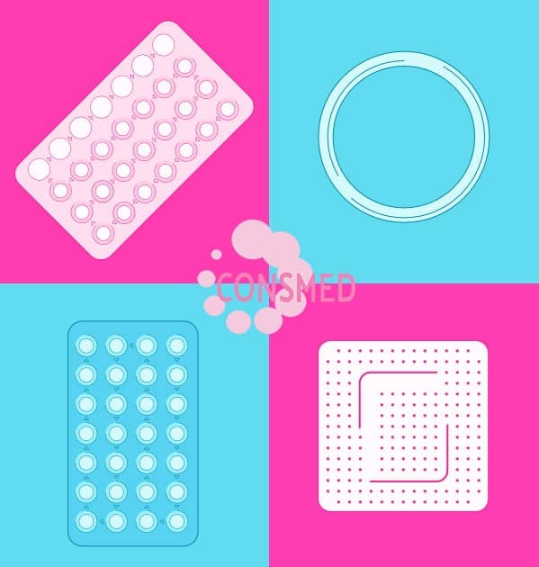
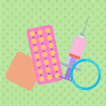
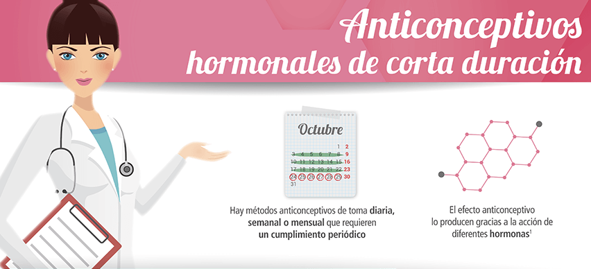

Danger: This action is not reversible
Skip to main content¿CÓMO FUNCIONAN LOS ANTICONCEPTIVOS HORMONALES?
Tu ciclo mensual está controlado por dos hormonas principales, el estrógeno y la progesterona. Los niveles de estrógeno se elevan después de la menstruación, lo que ocasiona que un óvulo se desarrolle y sea liberado por sus ovarios (ovulación). El recubrimiento del útero se engruesa en preparación para recibir al óvulo fertilizado. Luego de la ovulación, la progesterona ayuda a que el recubrimiento del útero engruese aún más.

El óvulo desciende por la trompa de falopio y, si no quedas embarazada, tu organismo lo absorbe naturalmente. Los niveles de estrógeno y progesterona en tu cuerpo disminuyen, y el recubrimiento del útero se desprende causando un período menstrual.
Los anticonceptivos hormonales contienen versiones artificiales (sintéticas) de las hormonas. Estas mimetizan el efecto del estrógeno y la progesterona en tu organismo. Cuando los métodos anticonceptivos hormonales se toman adecuadamente, interfieren con tu ciclo mensual regular y evitan el embarazo.
Los anticonceptivos hormonales actúan de tres maneras:
-Impidiendo que tus ovarios liberen el óvulo
-Espesando la mucosidad en su cerviz (cuello uterino), lo que dificulta más a los espermatozoides entrar a tu útero y fertilizar al óvulo
-Haciendo que el recubrimiento del útero sea demasiado delgado para permitir que un óvulo fertilizado se implante
¿CUÁLES SON LOS MÉTODOS DE ANTICONCEPTIVOS HORMONALES PRINCIPALES?
Existen diferentes tipos de métodos químicos y hormonales que cumplen una función anticonceptiva. Los principales anticonceptivos hormonales son:
Pastillas hormonales o anticonceptivos orales:
-Píldora anticonceptiva oral combinada (COC). A esta frecuentemente se le conoce como la píldora y contiene dos hormonas; un progestágeno y estrógeno. Éstas son similares a las hormonas que se producen en los ovarios.
-Píldora de progestágeno (POP). A esta a veces se le llama minipíldora y puede ser tomada por las mujeres que no pueden tomar la píldora oral combinada.
Parches hormonales y anillo anticonceptivo:

También se puede tomar estrógeno y progestágeno a través de anticonceptivos hormonales en forma de parche cutáneo adhesivo y como un anillo vaginal.
Inyecciones de acción prolongada. Hay dos principales inyecciones de hormonas que pueden brindar un efecto anticonceptivo prolongado. El tiempo dura el efecto de las inyecciones anticonceptivas puede varíar entre ocho a 12 semanas. Ambas contienen un progestágeno.
Implante:
Este anticonceptivo hormonal se inserta bajo la piel. Libera una cantidad constante de un progestágeno, brindando un efecto anticonceptivo por hasta tres años.
Sistema intrauterino (IUS):
Este anticonceptivo hormonal es un dispositivo plástico en forma de “T” que se coloca en el útero. Libera progesterona y funciona por hasta cinco años.
Anticonceptivos hormonales de emergencia

Si piensas que el anticonceptivo ha fallado, puedes adquirir anticonceptivos hormonales de emergencia (EHC) a través de tu médico, farmacia, clínica de salud sexual o centro ambulatorio del servicio nacional de salud. Estas pastillas hormonales de emergencia son una tableta que contiene levonorgestrel, un tipo de progestágeno.
Aunque a menudo se le llama la píldora del día después, puede funcionar hasta 72 horas después de mantener relaciones sexuales sin protección. Pero es importante tomar este anticonceptivo hormonal lo más temprano posible para lograr un máximo de efectividad. El anticonceptivo hormonal de emergencia puede impedir o demorar el proceso de liberación del óvulo, o evitar que los óvulos fertilizados se implanten en las paredes del útero. Ello debe impedir que quedes embarazada. Como una alternativa al anticonceptivo hormonal de emergencia, tu médico de cabecera puede colocarte un dispositivo intrauterino hasta cinco días después de haber tenido relaciones sexuales sin protección. Esto también evitaría que el óvulo se fertilice o se implante en el útero.
Esto también evita que el óvulo se fertilice o se implante en el útero.